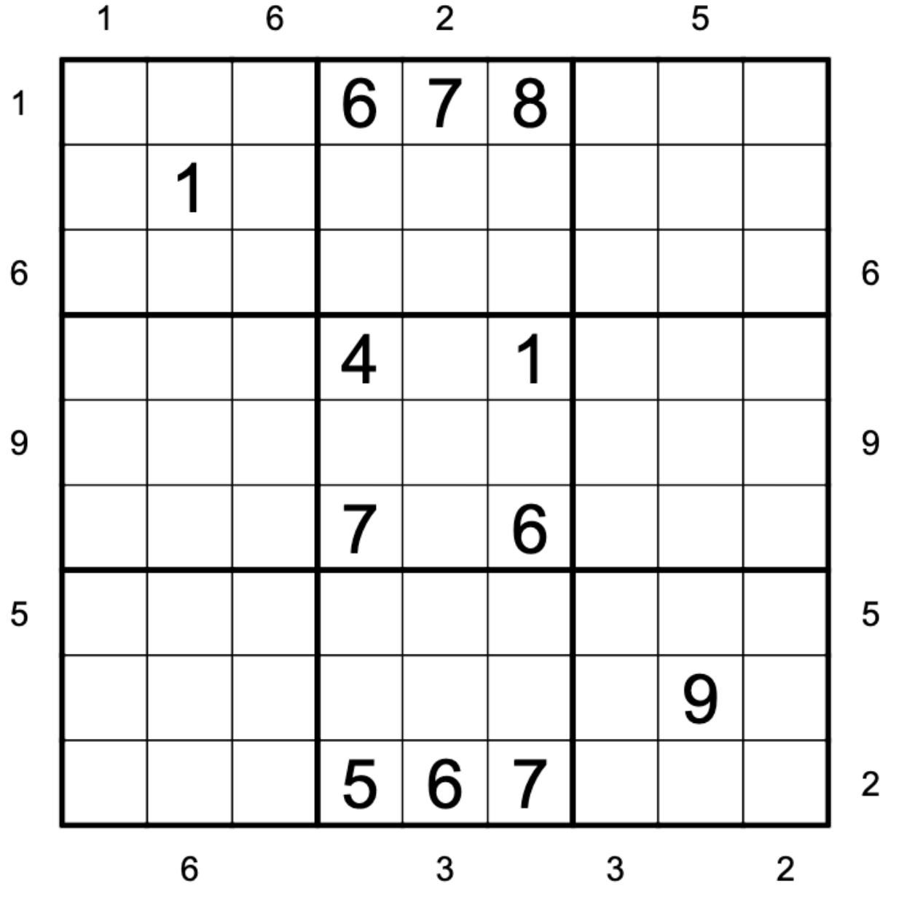
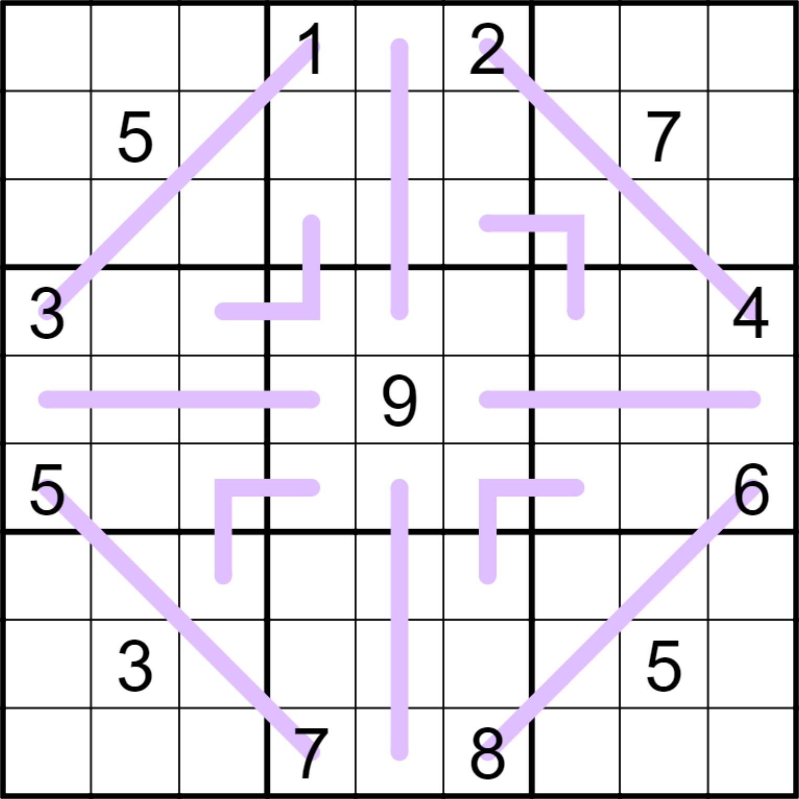
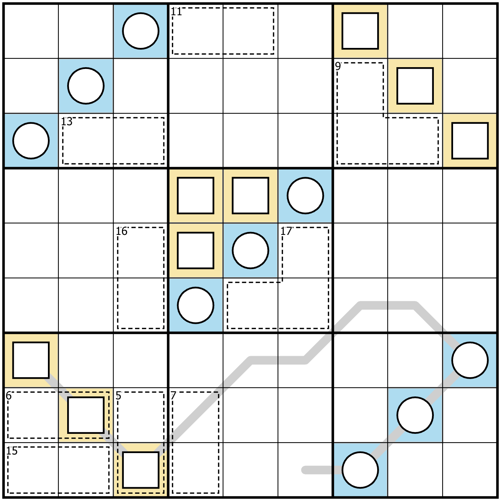
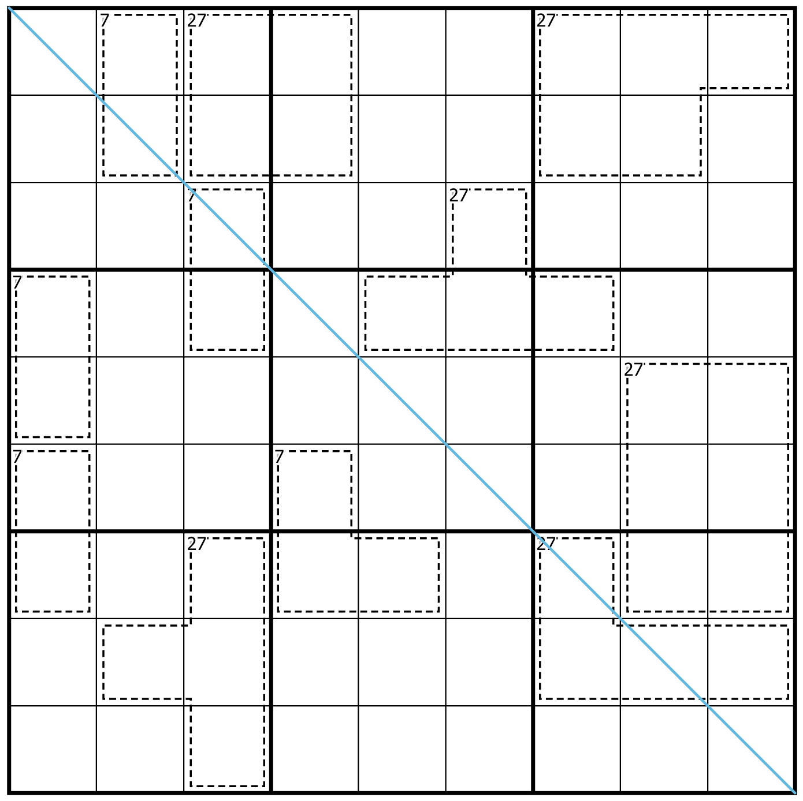
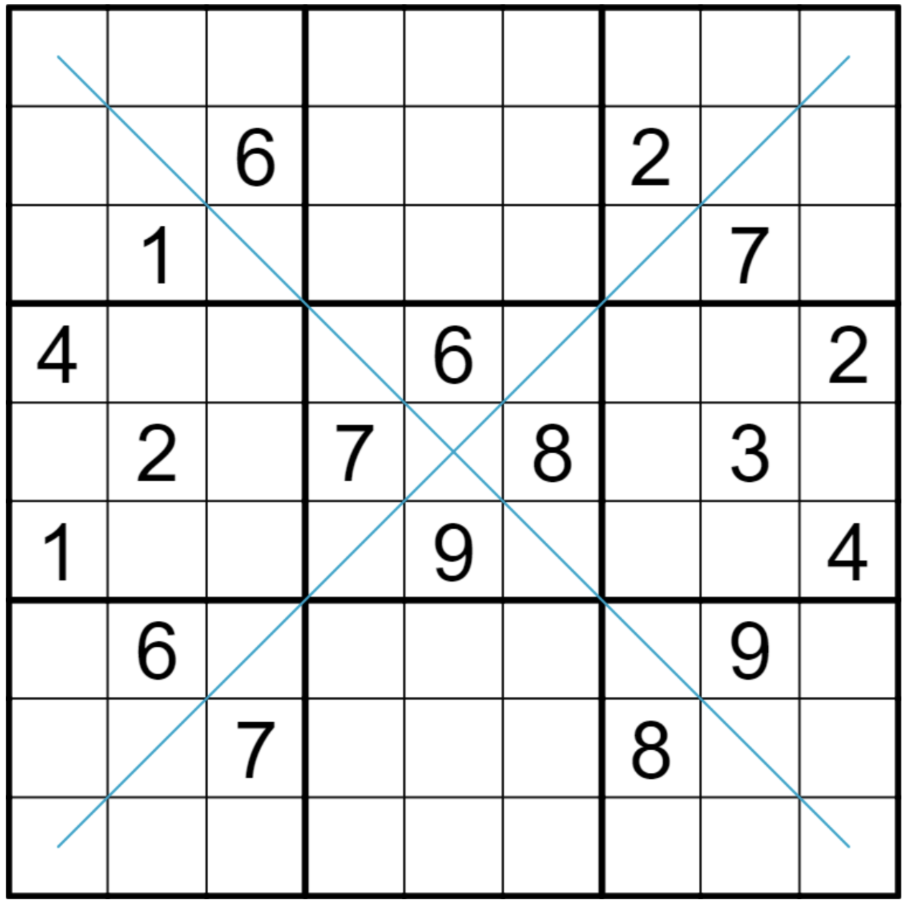

The Sequel by Aad van de Wetering
August 31st, 2021
Time to Solve: 45:23
Normal sudoku rules apply. Cells connected by a knight's move (in chess) cannot contain the same digit. In the grey cells, two cells connected horizontally must differ in value by exactly 2; two cells connected vertically must differ in value by exactly 3.
Link to PuzzleThermo Quads by clover!
August 31st, 2021
Time to Solve: 9:42
Normal sudoku rules apply. Digits along a thermometer strictly increase, starting at the round bulb. (Note for new solvers: "strictly" increase means that each digit has to be greater than the previous one, instead of staying the same or going down. Digits don't have to be consecutive!) Digits written in a white circle must appear somewhere in the four cells surrounding that dot.
Link to PuzzleWhisper of the Killer of the Snake by Joseph Nehme
August 30th, 2021
Time to Solve: 60:23
Normal sudoku rules apply. In cages, digits must sum to the small clue in the top left corner of the cage. Digits cannot repeat within a cage. The cages themselves must be deduced. Each cage is a snake path of orthogonally connected cells that starts or ends at the cage sum cell. Each cage is a minimum of 2 cells long. Note the snake line must not branch; must always have the small cage total clue in its top left corner (topmost prioritised over leftmost); and your snake MAY touch itself. Adjacent digits along each snake path must have a difference of at least 5. Cages may not overlap.
Link to PuzzleTo Me, My... by Philip Newman
August 30th, 2021
Time to Solve: 9:19
Normal sudoku rules apply. Clues outside the grid are the sum of the first X digits in the corresponding row or column, starting with the digit adjacent to the clue and continuing away from the clue, where X is the adjacent digit. For example: ?????7534 (19) would be a valid fill for a row where 19 is the sum of the rightmost 4 digits.
Link to PuzzleArrow Sudoku by David Miller
August 29th, 2021
Time to Solve: 14:46
Normal sudoku rules apply. Digits on the arrow must sum to the digit in the connected bulb.
Link to PuzzleEven Sandwiches by Sam Cappleman-Lynes
August 29th, 2021
Time to Solve: 21:56
Normal sudoku rules apply. If a number is given outside the grid, then its two direct neighbours in the corresponding row or column must both be even.
Link to PuzzleLouis XV by filuta
August 28th, 2021
Time to Solve: 12:33
Normal sudoku rules apply. Digits separated by a V must sum to 5. Digits separated by an X must sum to 10. There is a negative constraint.
Link to Puzzle159 Sudoky by Shye
August 28th, 2021
Time to Solve: 40:33
Normal sudoku rules apply. Digits in the first column indicate in which column the digit 1 is placed in the respective row. Digits in the fifth column indicate in which column the digit 5 is placed in the respective row. Digits in the ninth column indicate in which column the digit 9 is placed in the respective row.
Link to Puzzle
Even Sandwich by clover!
August 28th, 2021
Time to Solve: 9:35
Normal sudoku rules apply. Also, a digit shown outside of a row or column must be "sandwiched" directly between two even digits in that row or column. Not all possible outside digits are given.
Link to PuzzleStitches by Ricky Cruz
August 27th, 2021
Time to Solve: 24:54
Normal sudoku rules apply. On thermometers, digits increase from the bulb end. Digits linked by a blue thread sum to 6. Digits linked by a purple thread sum to 14. Repeats are allowed on the sum threads.
Link to PuzzleTriple Double by Philip Newman
August 27th, 2021
Time to Solve: 6:18
Normal sudoku rules apply. Digits in cells connected by a black dot must have the ratio given.
Link to Puzzle2021 Thermo Sudoku by Serhii Tyshchenko
August 26th, 2021
Time to Solve: 14:01
Normal sudoku rules apply. Along thermometers, digits increase from the bulb.
Link to PuzzleThree-In-A-Row by Sam Cappleman-Lynes
August 26th, 2021
Time to Solve: 13:22
Normal Sudoku rules apply. There are some lines drawn in the grid; for each line, it must contain either three odd digits or three even digits.
Link to PuzzleExtra Regions by clover!
August 25th, 2021
Time to Solve: 6:47
Normal sudoku rules apply. Each grey region contains the digits 1 through 9 exactly once each.
Link to PuzzleTTKrayt Dino by Philip Newman
August 24th, 2021
Time to Solve: 6:14
Normal sudoku rules apply.
Link to PuzzleRossini Sudoku by Sam Cappleman-Lynes
August 23rd, 2021
Time to Solve: 11:32
Normal sudoku rules apply. If there is an arrow outside the grid, then the three digits nearest to that arrow must strictly increase in the direction of the arrow.
Link to PuzzleKropki Pairs by clover!
August 22nd, 2021
Time to Solve: 8:46
Normal sudoku rules apply. Digits on either side of a white dot must be consecutive. Digits on either side of a black dot must be in a 1:2 ratio. Not all dots are necessarily given.
Link to PuzzleDiff Diffs by Philip Newman
August 21st, 2021
Time to Solve: 6:45
Normal sudoku rules apply. Digits in cells connected by a white dot must have the difference given.
Link to Puzzle159 Sudoku by Sam Cappleman-Lynes
August 20th, 2021
Time to Solve: 6:26
Normal sudoku rules apply. Any digit placed in column 1 tells you which cell the 1 goes in in that row. For example, if Row 4, Column 1 is a 6, then 1 must go in Row 4, Column 6. The same applies to columns 5 and 9, but with the digits 5 and 9 respectively.
Link to PuzzleNumbered Rooms by clover!
August 19th, 2021
Time to Solve: 8:55
Normal sudoku rules apply. Also, if a digit appears outside of a row or column, the first digit in that row or column tells you where to put the outside digit.
Link to PuzzlePurple Haze by Philip Newman
August 18th, 2021
Time to Solve: 10:09
Normal sudoku rules apply. Digits along a purple line must form a set of consecutive digits with no repeats (in any order).
Link to PuzzlePosition Sudoku by Sam Cappleman-Lynes
August 17th, 2021
Time to Solve: 7:17
Normal sudoku rules apply. Clues outside the grid give the position of the largest number within the first three cells in the corresponding direction.
Link to PuzzleSlot Machine by clover!
August 16th, 2021
Time to Solve: 4:38
Normal sudoku rules apply. Each blue stripe contains exactly the same sequence of nine digits in the same order. The sequence can start at any point along a blue stripe, and when it reaches the bottom, it wraps around again to the top.
Link to PuzzleUnlucky for Some by Farkov
August 15th, 2021
Time to Solve: 11:26
Normal sudoku rules apply. Cages total 13. Orthogonally neighbouring cells cannot contain consecutive digits.
Link to PuzzleDid Set Join? by Philip Newman
August 15th, 2021
Time to Solve: 4:47
Normal sudoku rules apply. A digit cannot appear in the same relative position in different boxes. (For example, 4 cannot be in both r1c1 and r7c7, since these cells are in the top-left of their respective boxes.)
Link to PuzzleSurplus Sudoku by Sam Cappleman-Lynes
August 14th, 2021
Time to Solve: 4:35
Fill each empty cell with a number from 1-7 so that each number appears at least once in every row, column and outlined 8-cell region. That means that each region will have a single repeated number.
Link to PuzzleDeficit Sudoku by Sam Cappleman-Lynes
August 14th, 2021
Time to Solve: 8:28
Fill each empty cell with a number from 1-7 so that each number appears at most once in every row, column, and outlined 6-cell region. That means that each region will be missing one of the numbers.
Link to PuzzleX Thermo by clover!
August 13th, 2021
Time to Solve: 9:28
Normal sudoku rules apply. Digits along a thermometer must increase, starting from the round bulb. Digits on either side of an X must sum to 10. Not all X's are necessarily given.
Link to PuzzleQuad Wrangle by Philip Newman
August 12th, 2021
Time to Solve: 9:57
Normal sudoku rules apply. Digits in circles must appear in the four surrounding cells (in any order).
Link to PuzzleCoast to Coast by Sam Cappleman-Lynes
August 11th, 2021
Time to Solve: 8:46
Normal sudoku rules apply. Wherever two digits are given outside the grid, they must appear (in either order) in symmetric locations in the first and last three cells in the indicated row. For example, if one of them appeared in the second cell, the other must appear in the second-last cell.
Link to PuzzleX-Sums by clover!
August 10th, 2021
Time to Solve: 11:56
Normal sudoku rules apply. If there's a value outside of a row or column, then the digit in the first cell of that row or column tells you how many cells, in total, are summed together to get that value.
Link to PuzzleGAS LXIV by Philip Newman
August 9th, 2021
Time to Solve: 5:55
Normal sudoku rules apply. Digits in cells separated by an X must sum to 10, and digits in cells separated by a V must sum to 5. (No negative constraint.)
Link to PuzzleAngel Baby by Svanemamma
August 8th, 2021
Time to Solve: 16:14
Normal sudoku rules apply. Digits along thermometers must increase from the bulb. White dots join cells which have consecutive digits. Not all dots are given.
Link to Puzzle
Cupid Sudoku by Sam Cappleman-Lynes
August 8th, 2021
Time to Solve: 7:59
Normal sudoku rules apply. If a digit is placed on an arrow then it must repeat somewhere else in the cells pointed at by the arrow.
Link to Puzzle
Hats Wearing Dinos by Philip Newman
August 7th, 2021
Time to Solve: 17:35
Normal sudoku rules apply. Connected regions of grey cells contain the digits 1-9 once each. Green cells are "friendly" - the digit in a green cell matches the number of the row (counting top to bottom), the column (counting left to right), or the box (box 1 is top left, box 2 is top middle, etc.).
Link to PuzzleInvisible Grids by Noah Bennett
August 7th, 2021
Time to Solve: 18:35
Normal sudoku rules apply. Digits along thermometers must increase from the bulb. Digits joined by a white dot must be consecutive; those joined by a black dot must have a 1:2 ratio. Digits along arrows sum to the number in the connected circle. Identical digits cannot be either a knight's move or a king's move apart.
Link to PuzzleBattleships Sudoku by Jeff Wajes
August 7th, 2021
Time to Solve: 35:01
Normal sudoku rules applu. In cages, digits must sum to the small clue in the top left corner of the cage. Digits cannot repeat within a cage. There are exactly five enemy ships. A ship is a straight line of orthogonally-connected cells; two ships are 3 cells long; and the remaining ships are of lengths 2, 4 & 5 cells. Cells in the given cages (green) are land. All other cells (blue) are sea. Ships can only occupt sea cells. Ships cannot touch each other, even diagonally. Each ship acts like a cage with a sum of 15. Shipd are unambiguous and the negative constraint applies. In other words, any line of 2/3/4/5 sea cells which sum to 15 MUST be a ship. Similarly any line of sea cells which cannot be a ship CANNOT sum to 15.
Link to PuzzleArrow by clover!
August 7th, 2021
Time to Solve: 6:37
Normal sudoku rules apply. Also, digits along an arrow sum to the value in the adjoining circle. Digits along an arrow can repeat, as long as they follow all other sudoku rules.
Link to Puzzle
Cylinder by Timothy Bexon
August 6th, 2021
Time to Solve: 26:07
Normal sudoku rules apply. The grid is a 'cylinder', continuous from the right edge to the left edge. In each row, certain cells that add to a given number are joined by a line. Any line in that row adds to the same number. The number increases, row by row, down the grid, and is shown in the blue cells in that row (a repeated number like 33 would be shown as a single digit (3), otherwise a 2-digit number reads left-to-right).
Link to PuzzleCat o' Nine Tails by Stuart Emmerson
August 6th, 2021
Time to Solve: 33:57
Normal sudoku rules apply. Digits increase along thermometers from the bulb to the end(s). Marked cages sum to 9, and three 'invisible' 2-cell cages summing to 9 each are in box 2 (the top, middle 3x3 box).
Link to PuzzleShhhh! by Philip Newman
August 6th, 2021
Time to Solve: 6:23
Normal sudoku rules apply. Along green lines, digits differ from their neighbors by at least 5.
Link to PuzzleCircuit Breaker by Fritzdis
August 6th, 2021
Time to Solve: 20:47
Normal sudoku rules apply. Digits on a line must be between the digits in the connected circles ie greater than the lower of the two circled digits and lower than the greater of the two circled digits. The digits on the lines must allow the smallest possible difference between the numbers on their circles. A difference of zero is possible.
Link to PuzzleRound Off by Sam Cappleman-Lynes
August 5th, 2021
Time to Solve: 12:42
Normal sudoku rules apply. Cages show the result of rounding the two-digit number that they contain (read left-to-right or top-to-bottom) to the nearest multiple of 10. If a number ends in 5, it is rounded up.
Link to PuzzleThe Factory by Lisztes
August 4th, 2021
Time to Solve: 23:47
Normal sudoku rules apply. Digits cannot repeat in cages, which show their sums. Identical digits cannot be within a king's move of each other (i.e. cannot touch diagonally).
Link to PuzzleGerman Whiskers by Dying Flutchman
August 4th, 2021
Time to Solve: 31:17
Normal sudoku rules apply, Along thermometers, digits increase from the bulb. Grey circles without lines represent odd digits. Neighbouring cells along orange lines must have a difference of at least 5. Clues outside the grid show the sum of the indicated diagonal, which may include repeats.
Link to PuzzleGerman Whiskers by Subtitle
August 4th, 2021
Time to Solve: 21:41
Normal sudoku rules apply, Along thermometers, digits increase from the bulb. Grey circles without lines represent odd digits. Neighbouring cells along green lines must have a difference of at least 5.
Link to PuzzleAre Circles and Squares Pals? by PDN
August 4th, 2021
Time to Solve: 33:37
Normal sudoku rules apply. The grey line is a palindrome, reading the same forwards and backwards. There are no repeated digits in circles, nor in squares. Cages show their sums.
Link to PuzzleCreasing Sudoku by clover!
August 4th, 2021
Time to Solve: 8:44
Normal sudoku rules apply. Each green line works like a thermometer: the digits increase along the line, going from one end of the line to the other. However, you have to figure out which end is the low end and which is the high end.
Link to PuzzlePalindrometers by EasilyAmused
August 3rd, 2021
Time to Solve: 21:36
Normal sudoku rules apply. Digits separated by a knight's move (in chess) cannot contain the same digit. In cages, digits must sum to the small clue in the top left corner of the cage. The inequality sign points to the lower digit. The green lines are 'palindrometers'. Digits along a palindrometer must increase from the bulb. Digits along a palindrometer must also read the same forwards and backwards (like a palindrome) with the bulb acting as the centre of the palindrome.
Link to PuzzleSandwichScrapers by cfop
August 3rd, 2021
Time to Solve: 63:40
Normal sudoku rules apply. Clues outside the grid show how many buildings can be seen in that row/column, assuming that numbers in the grid represent buildings of that height. Sandwich clues are not given, but would show the sums of digits between 1 and 9, and would increase by 1 in every row going down the grid.
Link to Puzzle129 Snowflake by Philip Newman
August 3rd, 2021
Time to Solve: 18:30
Normal sudoku rules apply.
Link to PuzzleMissing the Target by Joseph Nehme
August 2nd, 2021
Time to Solve: 42:50
Normal sudoku rules apply. Each arrow needs to be extended by one cell that is a king's move from its current tip. Arrows cannot share their last missing cell. The last cell cannot be on any of the given circles or on any of the given arrow cells. The digit in an arrow's circle is the sum of all the digits along the arrow, including the digit on that arrow's missing arrow tip.
Link to PuzzleSpider Solitaire Sudoku by Trevor Tao
August 2nd, 2021
Time to Solve: 13:06
Normal Sudoku rules apply. In each column, any cage of N≥2 cells must contain a run of N consecutive digits sorted in descending order, starting from the top. Negative constraints apply, e.g. 8 cannot be immediately above 7 unless both cells are in the same cage.
Link to Puzzle
The Return Of The Pentominous Odds by Lucy Audrin
August 2nd, 2021
Time to Solve: 37:07
Normal sudoku rules apply. In every 3x3 box, the odd digits form a pentomino shape. The cell with a circle is odd. Inequality signs point to the smaller of the two cells.
Link to PuzzleOutside Sudoku by Sam Cappleman-Lynes
August 2nd, 2021
Time to Solve: 6:45
Normal Sudoku rules apply. Each digit that appears outside the grid must be placed somewhere in the first three cells in the corresponding direction.
Link to PuzzleThe Knot by tenaliraman
August 2nd, 2021
Time to Solve: 44:29
There are nine 9-cell regions in the grid. Each region contains each digit from 1-9 exactly once. Each row and column also contain the digits from 1-9 exactly once. The digits on an arrow path add up to the digit in that arrow's circle. Digits on an arrow may repeat if allowed by other rules.
Link to Puzzle
Primes are Too Cool by Niverio
August 1st, 2021
Time to Solve: 40:45
Normal sudoku rules apply. Digits on an arrow can repeat, and sum to the number in the circle. The grey line is a palindrome, reading the same either way. The black dot joins two digits with a 1:2 ratio. Digits in grey cells are larger than their orthogonal neighbours. Prime numbers can never be orthogonal neighbours.
Link to PuzzleSymmetry?
August 1st, 2021
Time to Solve: 54:29
Normal sudoku rules apply. Each of the digits in the white circle must appear in one of the four cells surrounding the circle. The green areas are clones. They contain identical digits in identical positions. The two purple cells are also clones and must contain the same digit. Digits in a cage cannot repeat and must sum to the small clue in the upper left corner of the cage. Digits along a thermometer must increase from the bulb. A black dot between two cells means that one of the digits in the cells is exactly double the other. Not all possible black dots are given. Cells with a grey circle must contain an odd digit. Cells with an grey square must contain an even digit.
Link to PuzzleFutomaki by Pseudonum
August 1st, 2021
Time to Solve: 29:30
Normal sudoku rules apply. Digits along an arrow must sum to the digit in that arrow's circle. In cages, digits must sum to the small clue in the top left corner of the cage. Digits cannot repeat within a cage. On each main diagonal (marked in blue) digits cannot repeat.
Link to Puzzle
Consec Pairs by clover!
August 1st, 2021
Time to Solve: 10:11
Normal sudoku rules apply. Digits on either side of a white dot must be consecutive. Not all possible dots are given.
Link to PuzzleAbridged by Nutty
August 1st, 2021
Time to Solve: 28:37
Normal Sudoku rules apply. Digits on an arrow sum to the digit in the bulb. Digits in a diagonal sum to the number shown outside the grid. Cells separated by an X sum to 10. Cells separated by a V sum to 5. Cells separated by a white dot are consecutive. No negative constraints apply.
Link to PuzzleStroking My Ego by Philip Newman
July 31st, 2021
Time to Solve: 10:03
Normal sudoku rules apply. Digits along thermometers must increase from bulb to tip.
Link to PuzzleBurrows by jovi_al
July 30th, 2021
Time to Solve: 47:33
Normal sudoku rules apply. In cages, digits must sum to the small clue in the top left corner of the cage. Digits cannot repeat within a cage. Digits in cells along an arrow sum to the digit in that arrow's circle.
Link to PuzzleCL Sudoku by Sam Cappleman-Lynes
July 30th, 2021
Time to Solve: 8:40
Normal Sudoku rules apply. The two-digit numbers either side of a C must sum to 100 and those either side of an L must sum to 50. There is no negative constraint.
Link to Puzzle
Trapezoids by Walking Writer
July 29th, 2021
Time to Solve: 27:42
Normal sudoku rules apply. Numbers along the green line must alternate between odd and even digits. The black dots connect cells with a 2:1 ratio. The white dots connect cells with a difference of one. Not all black and white dots are shown.
Link to PuzzleSymmetric Fillomino #1 by Jesper Josefsson
July 29th, 2021
Time to Solve: 39:59
Divide the grid into orthogonally connected regions. Each cell must contain a number equal to the number of cells in its region. No two regions of same size (ie containing the same number of cells) may share an edge. Additionally, each region must be point symmetric, i.e. map onto itself if rotated 180 degrees around some point.
Link to Puzzle
Slow Thermo by clover!
July 29th, 2021
Time to Solve: 8:58
Normal sudoku rules apply. Digits on the slow thermo may never decrease (starting from the circular bulb). They may repeat if other rules allow it.
Link to PuzzlePalindrome Sums II by tzael
July 28th, 2021
Time to Solve: 17:59
Normal sudoku rules apply. Lines are palindromes and the digits along each line must sum to the same total. (A palindrome reads the same in both directions).
Link to PuzzleBegun It Has by Philip Newman
July 28th, 2021
Time to Solve: 7:17
Normal sudoku rules apply. Blue/caged regions are clones of each other (must contain the same digits in the same order).
Link to PuzzleOyster by Tyrgannus
July 28th, 2021
Time to Solve: 33:52
Normal sudoku rules apply. Along thermometers, digits increase from the bulb. A number in a circle must appear in one of the cells touching that circle.
Link to PuzzleBrutalism by PulverizingPancake
July 28th, 2021
Time to Solve: 54:56
Normal sudoku rules apply. In cages, digits must sum to the small clue in the top left corner of the cage (if given). Digits cannot repeat within a cage. Each main diagonal (marked in blue) cannot contain a repeated digit.
Link to PuzzleThe Cube by Marvin Kannhäuser
July 27th, 2021
Time to Solve: 29:45
Normal sudoku rules apply. The digits in white circles must appear in at least one of the four cells touching the circle. The digit in the grey cell must be higher than its four orthogonal neighbours. Additionally every edge of the cube sums to the same two-digit number and this number is given in the grid by the 3 two-cell cages (all of which are filled identically), with the tens digit as the top number and the units digit below that.
Link to Puzzle7ZAR by Joseph Nehme
July 27th, 2021
Time to Solve: 23:12
Normal sudoku rules apply. Digits do not repeat in cages, and all cages sum to the same number, to be discovered by the solver.
Link to PuzzleWYSI by brandon_bot
July 27th, 2021
Time to Solve: 52:12
Normal sudoku rules apply. In cages, digits must sum to the small clue in the top left corner of the cage. Digits cannot repeat within a cage. On the (marked) blue diagonal, digits cannot repeat.
Link to PuzzleWheel Sudoku by Sam Cappleman-Lynes
July 27th, 2021
Time to Solve: 7:24
Normal Sudoku rules apply. Each of the circles in the grid (passing through four cells) is marked with the right digits in the right order. You might need to rotate each wheel into a different position first.
Link to Puzzle
Consec-Pairrow by clover!
July 26th, 2021
Time to Solve: 5:11
Normal sudoku rules apply. Digits along an arrow sum to the value in the adjoining circle. Digits on either side of a white dot must be consecutive (not all white dots are given).
Link to PuzzleSquareShapedBox by Philip Newman
July 25th, 2021
Time to Solve: 13:25
Normal sudoku rules apply. Within cages digits cannot repeat, and must increase from left to right (in rows) and top to bottom (in columns).
Link to PuzzleConsecutive Circles Sudoku by Sam Cappleman-Lynes
July 24th, 2021
Time to Solve: 8:03
Normal Sudoku rules apply. For each of the circles in the grid, the cells it passes through must contain a sequence of consecutive digits in order - the start point and direction must be determined.
Link to Puzzle
Divergence by grkles
July 23rd, 2021
Time to Solve: 44:07
Normal sudoku rules apply. Digits along an arrow must sum to the digit in that arrow's circle. Clues outside the grid give the sum of the digits along the indicated diagonal. Digits may repeat along such a diagonal (if allowed by other rules).
Link to Puzzle
It's Getting Hot in Here by Joseph Nehme
July 23rd, 2021
Time to Solve: 22:27
Normal sudoku rules apply. Digits must strictly increase on the thermometer, starting from the bulb.
Link to Puzzle
Search Nine by clover!
July 23rd, 2021
Time to Solve: 10:40
In this search nine sudoku, standard sudoku rules apply. Digits in arrow cells tell you how far it is to the digit 9 in that direction.
Link to PuzzleBadge by Philip Newman
July 22nd, 2021
Time to Solve: 10:14
Normal sudoku rules apply. Digits in cages must sum to the given total, and must not repeat.
Link to Puzzle
Classic Sudoku by Thomas Snyder
July 22nd, 2021
Time to Solve: 29:35
Normal sudoku rules apply.
Link to PuzzleCrossroads by Bill Murphy
July 21st 2021
Time to Solve: 16:39
Normal sudoku rules apply. Digits on a line must be strictly between the values of the digits in the associated circles. Clues outside the grid show the sum of the indicated diagonal, which may include repeats.
Link to Puzzle
Bent Diagonals Sudoku by Sam Cappleman-Lynes
July 21st, 2021
Time to Solve: 13:51
Normal Sudoku rules apply. There are four marked bent diagonals in the grid. Each of those four bent diagonals must contain a full set of the digits 1-9.
Link to PuzzleStandard Young Tableaux by Tharn11
July 20th, 2021
Time to Solve: 12:49
Normal sudoku rules apply. Within cages, digits must increase from top to bottom along columns and increase along rows from left to right. Digits cannot repeat within a cage.
Link to PuzzleIrregular by clover!
July 20th, 2021
Time to Solve: 6:04
Place the digits 1-9 such that each number only appears once in each row, column, and irregularly shaped region.
Link to Puzzle
Killer by clover!
July 20th, 2021
Time to Solve: 10:39
Normal sudoku rules apply. Digits may not repeat in a cage, and must sum to the total in the top left corner.
Link to PuzzleBiscuit by Jakhob
July 20th, 2021
Time to Solve: 27:29
Normal sudoku rules apply. The cage shows its sum. Grey circles mark odd digits; grey squares mark even digits. Digits must increase along thermos from the bulb. A black dot joins digits with a ratio of 1:2; a white dot joins consecutive digits. Not all dots are given.
Link to PuzzleThermal Lights by Abed Hawila
July 19th, 2021
Time to Solve: 50:48
Normal sudoku rules apply. Along thermometers, digits must increase from the bulb end. Cells separated by a knight's move (in chess) cannot contain the same digit.
Link to PuzzlePersonal Space by Philip Newman
July 19th, 2021
Time to Solve: 6:35
Normal sudoku rules apply. Orthogonally adjacent cells cannot contain consecutive digits.
Link to Puzzle
Happy Birthday by Akash Doulani
July 19th, 2021
Time to Solve: 33:30
Normal sudoku rules apply. Some cages show their sums. Clues outside the grid show the sum of indicated diagonals, which may include repeat digits.
Link to Puzzle
Renban Sudoku by Sam Cappleman-Lynes
July 18th, 2021
Time to Solve: 9:17
Normal sudoku rules apply. Each marked line must contain a non-repeating set of consecutive digits, in any order.
Link to PuzzleSquare Wheel by TwotoTenth
July 17th, 2021
Time to Solve: 71:11
The digits in each cage and along each diagonal indicated by an arrow outside the grid must sum to a perfect square. Digits may not repeat within cages, but may repeat along the indicated diagonals if allowed by other rules.
Link to PuzzleClock Face Sudoku by clover!
July 17th, 2021
Time to Solve: 7:06
Normal sudoku rules apply. Also, there are some black and white dots in the grid. The four digits surrounding a white dot have to increase as you go clockwise (the correct starting point is up to you to figure out.) The four digits surrounding a black dot have to increase as you go counterclockwise.
Link to Puzzle
Renbanshooter by Lavaloid
July 16th, 2021
Time to Solve: 34:43
Normal sudoku rules apply. In cages, digits must sum to the small clue in the top left corner of the cage. Digits cannot repeat within a cage. Each grey line contains a set of consecutive, non-repeating digits in any order.
Link to Puzzle
Clock Sudoku by Sam Cappleman-Lynes
July 15th, 2021
Time to Solve: 17:36
Normal Sudoku rules apply. In addition, there are several digital displays in the grid; each of these must contain a valid time in 24-hour format. For example, 19:47 and 23:41 would both be fine but you can't have 17:82 or 31:45.
Link to PuzzleTomb of Whispers
July 14th, 2021
Time to Solve: 65:00
Normal sudoku rules apply. In cages, digits must sum to the small clue in the top left corner of the cage. Digits cannot repeat within a cage. Adjacent digits on an orange line have a difference of at least 5.
Link to PuzzleSkyscraper by clover!
July 14th, 2021
Time to Solve: 15:53
Normal sudoku rules apply. Also, each digit in the grid should be seen as a 'skyscraper," with its height corresponding to its value (bigger numbers are taller). The numbers outside of the grid tell you how many of the skyscrapers in that row or column can be 'seen' from that direction. A taller skyscraper can be seen over top of a shorter one.
Link to Puzzle
Flywheel by Innocuous
July 13th, 2021
Time to Solve: 48:27
Normal sudoku rules apply. All lines in the grid are "renban" ie they must each contain a set of consecutive, non-repeating digits in any order. Cells containing an opaque grey square must contain an even digit. Digits in circles must appear in at least one of the cells touched by the circle.
Link to PuzzleHourglass by Philip Newman
July 13th, 2021
Time to Solve: 6:56
Normal sudoku rules apply. Digits in grey circles must be odd. Digits in grey squares must be even.
Link to Puzzle
Untitled Goose Sudoku by Bill Murphy
July 12th, 2021
Time to Solve: 34:15
Normal sudoku rules apply. The “goose path” from r9c2 to r1c8 is orthogonally connected, visits every cage and box and does not touch itself orthogonally or diagonally. Cages contain no repeated digits and show the total of the cells in the cage that are not on the goose path. Grey squares are not on the goose path, and show even digits which count the goose path cells in the adjacent (including diagonal) cells.
Link to Puzzle
Killer Sudoku by Sam Cappleman-Lynes
July 12th, 2021
Time to Solve: 7:33
Normal Sudoku rules apply. Digits in cages can't repeat and must sum to the indicated value.
Link to PuzzleIt’s been a long Knight by James Hunter
July 11th, 2021
Time to Solve: 16:23
Normal sudoku rules apply. Cells an elongated knights move apart (3 cells in one direction, one cell in the other) must not contain the same digit. Orthogonally adjacent cells cannot contain the same digit.
Link to PuzzleArrow by clover!
July 11th, 2021
Time to Solve: 12:33
Normal sudoku rules apply. Digits along an arrow sum to the value in the circle attached to that arrow. (In this puzzle, the values in the circles are two-digit numbers, read from left to right).
Link to Puzzle
Magic Square Sudoku by Aad van de Wetering
July 10th, 2021
Time to Solve: 30:00
Normal sudoku rules apply. In addition, both marked diagonals must also contain the digits 1 to 9. Cells that are a knight's move apart (in chess) cannot contain the same digit. The central 3x3 box must form a magic square.
Link to PuzzleAscending Order by Philip Newman
July 10th, 2021
Time to Solve: 6:39
Normal sudoku rules apply. Digits along thermometers must increase from bulb to tip.
Link to PuzzleFinal Puzzle by No-Feet McGee
July 9th, 2021
Time to Solve: 22:15
This puzzle is meant to showcase my solve for the Roman Tragedy Puzzle Hunt. To play for yourself, go to the link below.
Link to PuzzleAct 10 Puzzle by Alice
July 9th, 2021
Time to Solve: 92:23
This puzzle is meant to showcase my solve for the Roman Tragedy Puzzle Hunt. To play for yourself, go to the link below.
Link to Puzzle
Palindromes by Sam Cappleman-Lynes
July 9th, 2021
Time to Solve: 6:23
Normal Sudoku rules apply. Each grey line must form a palindromic sequence; it must read the same in both directions.
Link to Puzzle
Act 9 Puzzle by No-Feet Mgee
July 9th, 2021
Time to Solve: 74:14
This puzzle is meant to showcase my solve for the Roman Tragedy Puzzle Hunt. To play for yourself, go to the link below.
Link to PuzzleAct 8 Puzzle by Sam-Testings
July 8th, 2021
Time to Solve: 13:12
This puzzle is meant to showcase my solve for the Roman Tragedy Puzzle Hunt. To play for yourself, go to the link below.
Link to PuzzleAct 7 Puzzle by Max Reenoch
July 8th, 2021
Time to Solve: 23:59
This puzzle is meant to showcase my solve for the Roman Tragedy Puzzle Hunt. To play for yourself, go to the link below.
Link to Puzzle
Act 6 Puzzle by MadMahogany
July 8th, 2021
Time to Solve: 61:30
This puzzle is meant to showcase my solve for the Roman Tragedy Puzzle Hunt. To play for yourself, go to the link below.
Link to Puzzle
Act 5 Puzzle by Alice
July 8th, 2021
Time to Solve: 3:00:00
This puzzle is meant to showcase my solve for the Roman Tragedy Puzzle Hunt. To play for yourself, go to the link below.
Link to PuzzleAct 4 Puzzle by Scott Strosahl
July 8th, 2021
Time to Solve: 35:31
This puzzle is meant to showcase my solve for the Roman Tragedy Puzzle Hunt. To play for yourself, go to the link below.
Link to PuzzleAct 3 Puzzle by James Daniel Peter
July 8th, 2021
Time to Solve: 79:41
This puzzle is meant to showcase my solve for the Roman Tragedy Puzzle Hunt. To play for yourself, go to the link below.
Link to Puzzle
Mathrax by clover!
July 8th, 2021
Time to Solve: 5:10
Normal sudoku rules apply. Also, the grid contains some white circles that each have a number and a math operation. If you apply that operation to each pair of diagonally opposite numbers touching the circle, then you'll get the number in the circle as your result both times. For instance, if you have a circle with "7+" in it, both pairs of diagonally opposite digits touching that circle must sum to 7. One valid example would be 1, 5, 6, 2 going around the circle clockwise (or counterclockwise).
Link to Puzzle
Act 2 Puzzle by SciFiFan
July 7th, 2021
Time to Solve: 94:21
This puzzle is meant to showcase my solve for the Roman Tragedy Puzzle Hunt. To play for yourself, go to the link below.
Link to Puzzle
Act 1 Puzzle by Alice
July 7th, 2021
Time to Solve: 26:50
This puzzle is meant to showcase my solve for the Roman Tragedy Puzzle Hunt. To play for yourself, go to the link below.
Link to Puzzle
Near and Far by Philip Newman
July 7th, 2021
Time to Solve: 18:47
Normal sudoku rules apply. Digits along a purple line (rows 1379) must form a set of consecutive digits with no repeats (in any order). Along a green line (rows 2468), digits differ from their neighbors by at least 5.
Link to Puzzle
Between Killer by Sam Cappleman-Lynes
July 6th, 2021
Time to Solve: 11:18
Normal sudoku rules apply. Digits in the cages cannot repeat and must sum to the given total (top left corner). Digits on a line must be strictly between the digits in the circles.
Link to PuzzlePentominous by Jin Hoo Ahn
July 5th, 2021
Time to Solve: 23:15
Divide the grid into pentominoes (five-cell regions) so that no two pentominoes of the same shape (including rotations/reflections) share an edge. A cell with a letter in it must be part of the pentomino shape normally associated with that letter. An inventory of pentominoes is given below the puzzle but not all shapes must be used.
Link to Puzzle
Pentominous by Murat Can Tonta
July 5th, 2021
Time to Solve: 13:05
Divide the grid into pentominoes (five-cell regions) so that no two pentominoes of the same shape (including rotations/reflections) share an edge. A cell with a letter in it must be part of the pentomino shape normally associated with that letter. An inventory of pentominoes is given below the puzzle but not all shapes must be used.
Link to Puzzle
Trio by clover!
July 5th, 2021
Time to Solve: 3:30
Normal sudoku rules apply. The digits 1, 2, and 3 are indicated with (orange) circles, and the digits 4, 5, and 6 are indicated with (blue) squares.
Link to Puzzle
Killer by clover!
July 4th, 2021
Time to Solve: 3:00
Normal 6x6 sudoku rules apply. Also, the sum of the digits in each cage must equal the value given in the upper-left corner of that cage. Digits cannot repeat inside a cage.
Link to Puzzle
Kropki by Philip Newman
July 4th, 2021
Time to Solve: 2:30
Normal 6x6 sudoku rules apply. Also, a white circle between two cells shows that the digits in those cells are consecutive (i.e., they differ by 1). A black circle shows that the digit in one of the cells has twice the value of the other. Not all possible circles are given.
Link to Puzzle
Thermo by Sam Cappleman-Lynes
July 4th, 2021
Time to Solve: 9:00
Normal 6x6 sudoku rules apply. Some thermometer shapes are in the grid; digits must be strictly increasing from the round bulb to the flat end.
Link to PuzzleTilted Windmill by Philip Newman
July 3rd, 2021
Time to Solve: 12:52
Normal sudoku rules apply. Cells separated by a (chess) knight's move cannot contain the same digit.
Link to PuzzleAntidiagonal by Sam Cappleman-Lynes
July 2nd, 2021
Time to Solve: 15:58
Normal Sudoku rules apply. Each marked diagonal contains only three distinct digits.
Link to PuzzleSandwich by clover!
July 1st, 2021
Time to Solve: 14:01
Normal sudoku rules apply. The numbers outside of the grid tell you the sum of all of the digits "sandwiched" between the 1 and the 9 in that row or that column.
Link to Puzzle
362880 subs by Trevor Tao
July 1st, 2021
Time to Solve: 27:47
Normal sudoku rules apply. Digits do not repeat in cages, and multiply together to give the number shown in the cage. The grey circle represents an odd digit.
Link to Puzzle
Revolution by Philip Newman
June 30th, 2021
Time to Solve: 7:31
Normal sudoku rules apply. Digits in diagonally adjacent cells cannot be the same. (In other words, a digit cannot touch itself, even diagonally.)
Link to Puzzle
Killer Arrow by Sam Cappleman-Lynes
June 29th, 2021
Time to Solve: 11:59
Normal sudoku rules apply. Digits in marked cages cannot repeat and must sum to the indicated total. Digits along an arrow must sum to the digit placed in the adjoining circle.
Link to PuzzleGerman Whispers by clover!
June 28th, 2021
Time to Solve: 36:31
Normal sudoku rules apply. Along a grey line, each digit is different from its neighbors by at least 5. Digits may repeat along a grey line as long as they follow the other rules.
Link to Puzzle
129 Columns by Philip Newman
June 27th, 2021
Time to Solve: 4:51
Normal sudoku rules apply.
Link to PuzzleThe Miracle by Mitchell Lee
June 26th, 2021
Time to Solve: 34:11
Normal sudoku rules apply. Any two cells separated by a knight's move or a king's move (in chess) cannot contain the same digit. Any two orthogonally adjacent cells cannot contain consecutive digits.
Link to Puzzle
Thermo Sudoku by Sam Cappleman-Lynes
June 26th, 2021
Time to Solve: 8:48
Normal Sudoku rules apply. The digits placed on each thermometer shape must be strictly increasing, starting from the bulb (circle).
Link to Puzzle625 by zetamath
June 26th, 2021
Time to Solve: 2:00:00
Every row/column contains the digits 1-9 exactly once each. Digits may not repeat along the marked (blue) diagonal. In cages, digits must sum to the small clue in the top left corner of the cage. Digits cannot repeat within a cage. Every cage must be entirely shaded or unshaded, and every row and column contains at least one shaded cell. In each row and column the cell that contains the number of shaded cells in that row/column is indicated either by a square or a circle. Circles indicate that all shaded cells in that row/column are orthogonally connected; squares indicate those shaded cells are not all orthogonally connected (though some may be). Whether a particular square/circle corresponds to its row/column (or both) is to be determined.
Link to PuzzleChinese Coin by Aspartagcus
June 25th, 2021
Time to Solve: 45:24
Normal sudoku rules apply. The square bulb and line form a 'thermometer' which must be populated by double-digit numbers. Each number starts with the tens-digit followed by the units digit (seen from the bulb end) ie tens and units digits alternate along the line. The numbers must increase moving away from the bulb.
Link to Puzzle
Point To Next by clover!
June 25th, 2021
Time to Solve: 18:00
Normal sudoku rules apply. If a digit appears in a cell with an arrow, then the arrow has to point to the next highest digit. For instance, if you put an 8 in an arrow cell, then there must also be a 9 somewhere in the direction the arrow is pointing. (It doesn't have to be right next to the 8, it just has to be in that direction somewhere). (Note: it has to be specifically the next highest digit, not just any higher digit.)
Link to PuzzleShot Thru the <3 by Philip Newman
June 24th, 2021
Time to Solve: 17:00
Normal sudoku rules apply. Digits in cages must sum to the total given, and digits cannot repeat within a cage. Digits along each grey line must form a palindrome (that is, a sequence of digits which reads the same starting from either end; for example, “123292321”).
Link to Puzzle
Consec Pairs by Sam Cappleman-Lynes
June 23rd, 2021
Time to Solve: 7:05
Normal sudoku rules apply. Digits on either side of a white dot must be consequtive. There is no negative constraint.
Link to PuzzleThe OG Wiggle
June 23rd, 2021
Time to Solve: 62:18
Normal sudoku rules apply. The grey circle is odd and the grey square is even. Digits along the blue line must be between the values at each end of that line. Digits along an arrow sum to the value in the associated circle. (The two-digit pill should be read as a two-digit number from left to right for these purposes.) Digits in a cage do not repeat; if a value is given for the cage, the digits sum to that value. Digits along a thermometer must increase from the bulb end. The orange cell is greater than the four digits orthogonally adjacent to it. Two cells separated by a black dot must have a 1:2 ratio. Digits along the marked brown diagonal may not repeat.
Link to Puzzle
Thermo Killer by clover!
June 22nd, 2021
Time to Solve: 18:47
Normal sudoku rules apply. Digits in a cage must not repeat and must sum to the values provided. Digits along a thermometer must strictly increase, starting from the bulb (round) end.
Link to Puzzle
GAK by Philip Newman
June 22nd, 2021
Time to Solve: 10:00
Normal sudoku rules apply. Digits in cells connected by a black dot must have a ratio of 2:1 (that is, one digit is double the other digit). Digits in cells connected by a white dot must be consecutive. There are no negative constraints (digits in adjacent cells not connected by a dot could be consecutive, have a ratio of 2:1, or neither).
Link to Puzzle
Love Heart by kuraban
June 21st, 2021
Time to Solve: 25:25
Normal sudoku rules apply. Along thermometers, digits must increase from the bulb end. In cages, digits must sum to the small clue in the top left corner of the cage. Digits cannot repeat within a cage. Digits along an arrow must sum to the digit in that arrow's circle/pill. The two digit pill total is read from top down. Digits in cells separated by X must sum to 10. Not all Xs are given.
Link to Puzzle